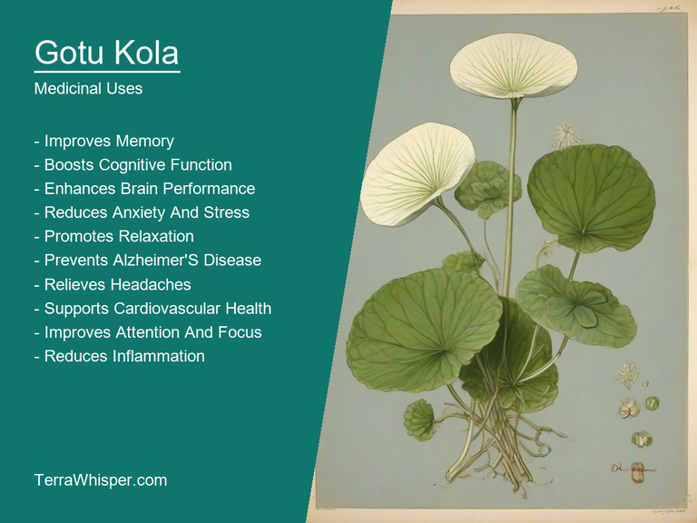
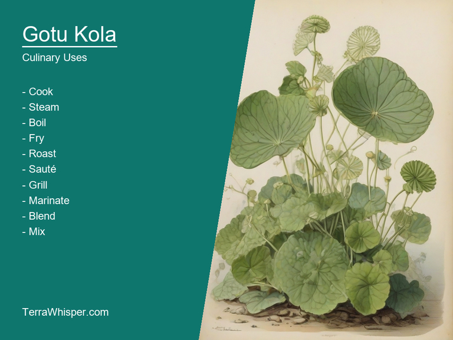
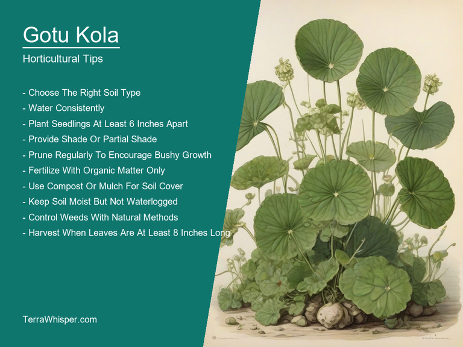
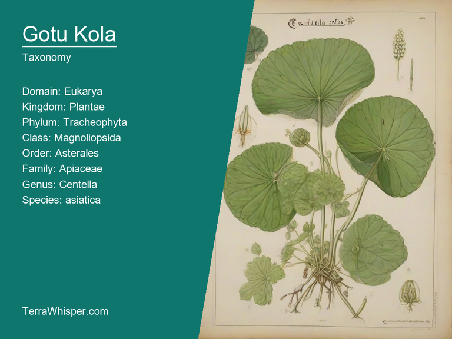
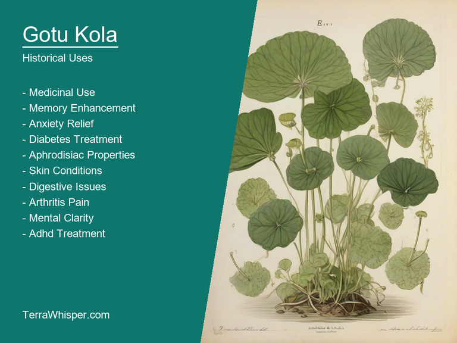

What To Know Before Using Gotu Kola (Centella Asiatica)

Gotu Kola, scientifically known as Centella asiatica, is an exotic medicinal and culinary plant originating from Asia and Australia. It has been used for centuries in traditional medicine for various ailments such as skin conditions, respiratory problems, and memory enhancement. Consumption of its leaves can be prepared into dishes like soups and sauces or made into salads.
The plant is also appreciated for its horticultural qualities. Its creeping stems form low mats of lush green foliage that are easy to maintain in various conditions, from partial shade to full sun exposure. Centella asiatica features small white flowers with yellow centers during the blooming season. As an ornamental plant, Gotu Kola adds a touch of serene elegance to garden spaces through its attractive appearance and soothing fragrance.
From a botanical perspective, Gotu Kola belongs to the Apiaceae family, which includes various aromatic plants like parsley and carrots. The plant's leaves are characterized by their rounded shape and lobed edges, while its stems have a creeping habit. Historically, Gotu Kola has been used in various Ayurvedic traditions to promote overall well-being, with the belief that it can improve cognitive abilities, aid digestion, and boost immune function.
In this article, you will discover what are the medicinal and culinary uses of gotu kola. Then, you'll learn how to cultivate it, what is its botanical profile, and how it was used historically.
What Are The Medicinal Uses Of Gotu Kola?
Gotu Kola (Centella asiatica) has many health benefits, such as improving cognitive function, supporting heart health, promoting wound healing, enhancing memory retention, and aiding in preventing diabetes complications. This herb is widely used due to its rich composition of bioactive compounds like saponins, triterpenoids, and flavonoids which contribute to its multiple healing properties.
The following illustration lists the most important uses of gotu kola in medicine.

The medicinal constituents found in Gotu Kola include various phytochemicals like alkaloids, coumarins, volatile oils, tannins, saponins, sterols, and amino acids. Among these components, the most significant are triterpenoid saponins which are known for their potent antioxidant effects and anti-inflammatory properties that assist in promoting skin health, wound healing, and preventing cellular damage.
The most commonly used parts of Gotu Kola include the aerial parts (leaves, stems, and flowers) and the roots. These parts are utilized to make various medicinal preparations such as teas, herbal powders, capsules, extracts, and tinctures for topical applications or internal consumption. The extraction processes used can vary widely according to the desired concentration of the active ingredients in the final product.
Though generally considered safe, Gotu Kola may cause some side effects that individuals with specific health conditions should be cautious of. Possible side effects include dizziness, headaches, nausea, mild rash or itching, and gastrointestinal distress in certain people who are sensitive to its bioactive compounds. Furthermore, people on medication for epilepsy or diabetes should consult their healthcare provider before starting the usage of Gotu Kola due to potential interactions with these medications.
To minimize risks and maximize benefits from using Gotu Kola, it is essential to follow certain precautions while taking this herb. These include adhering to recommended dosages, avoiding self-medication without professional advice, seeking medical consultation before incorporating it into your routine if you have a chronic condition or are pregnant, and consulting with an experienced herbalist for proper guidance on selecting the right preparation method.
What Are The Culinary Uses Of Gotu Kola?
Gotu Kola is a versatile culinary ingredient used across various cuisines, often appearing in soups, stews, and stir-fries to impart its unique flavor profile. It can also be found as a key component in many traditional dishes from Asian countries like India, Sri Lanka, and China.
The following illustration lists the most common uses of gotu kola for culinary purposes.

The flavor of Gotu Kola is described as savory with earthy undertones. Its distinct taste often adds depth to recipes while balancing other flavors within the dish. Cooking it can enhance its natural aroma, making it more appetizing when prepared for cooking and serving purposes.
The edible parts of Gotu Kola mainly consist of its leaves, which are usually used in culinary applications. These leaves have a delicate texture that is suitable for various preparations like salads or cooked into soups and stews to achieve the desired taste and appearance.
Culinary tips for using Gotu Kola may include selecting fresh and organic produce, properly cleaning and preparing the leaves before use, and adjusting cooking times according to each specific recipe. Additionally, it's essential to experiment with blending other ingredients to complement its unique flavor while retaining its healthful attributes within dishes.
It is important to note that Gotu Kola may have some potential side effects and toxicity associated with its use. While rare, allergic reactions could occur in certain individuals who are sensitive to the plant's components. Additionally, excessive consumption of Gotu Kola could cause dizziness, nausea, or headaches. To ensure safe enjoyment, it is advised to practice proper preparation and moderation when incorporating this ingredient into culinary dishes.
How To Cultivate Gotu Kola In Your Garden?
Firstly, select a well-drained spot with slightly acidic soil (pH range between 5.0 and 6.5). The area should receive full sun exposure for at least six hours daily. Plant the seeds or seedlings in the chosen spot with sufficient space of approximately one foot between each plant to avoid overcrowding. Regularly water your Gotu Kola garden to keep the soil moist but not wet.
The following illustration lists the most important tips to cutlitvate gotu kola.

Ideal growing conditions are essential for healthy growth and optimal development. When considering the climate, Gotu Kola prefers slightly humid environments with temperatures ranging from 20°C to 35°C (68°F - 95°F). It's important to provide ample air circulation by removing any excess leaves that may obstruct the airflow. Moreover, maintaining a balanced fertilization program with a slow-release formula is crucial for the plant's overall health and growth.
Regular maintenance ensures the continued well-being of your Gotu Kola garden. Harvest fresh sprouts by cutting them down from their stems during the growing season to encourage more robust new growth. Additionally, keep an eye out for any pests or diseases that may harm your plant. To prevent these issues, use organic methods such as introducing beneficial insects or implementing organic pest control solutions.
By adhering to these guidelines on horticulture practices for Gotu Kola, you can successfully cultivate a thriving, ornamental garden that adds beauty and interest to your landscape. With the right growing conditions and proper maintenance, this unique plant will reward you with vibrant flowers and a healthy, flourishing garden.
What Is The Botanical Profile Of Gotu Kola?
Gotu Kola, with botanical name Centella asiatica, belongs to the domain Eukarya, Kingdom Plantae, Phylum Magnoliophyta, Class Magnoliopsida (or Dicotyledoneae), Order Lamiales, Family Apiaceae. Common names include Asiatic Pennywort, Hydrocotyle, Indian Pennywort, and Thyme-leaved Groundsel. Centella asiatica exhibits variants with slightly different morphological characteristics.
The following illustration display the botanical profile of gotu kola.

The plant has a creeping growth habit, forming low mats of small, round, or heart-shaped leaves. The leaves are typically light green and glossy, with margins containing translucent dots that give them a unique appearance. The flowers are small and white, appearing in clusters during bloom time. Centella asiatica has a strong aromatic scent similar to thyme when the plant is crushed or bruised, adding further to its distinctive characteristics.
There are no major variants with distinct differences in their appearance. However, slight variations can be seen in leaf shapes and sizes, as well as flowering habits, but these do not significantly alter the plant's overall identity or therapeutic properties. It's important to note that the classification of Gotu Kola may vary depending on its growth habit. In some cases, it's grouped under the genus Hydrocotyle instead of Centella, leading to the additional common name Thyme-leaved Groundsel for plants in this classification.
The natural habitat of Gotu Kola is primarily tropical and subtropical regions around the world. It can be found in moist and well-drained soils such as marshes, swamps, wetlands, and riverbanks. Additionally, it's often encountered near rivers or water bodies where its aquatic environment thrives. The plant is also cultivated in some areas for its medicinal properties and culinary uses.
Gotu Kola undergoes a perennial life cycle, with the plant remaining alive for several years. It has the ability to reproduce both sexually through flowers and via an alternative means known as vegetative propagation, where new plants are generated from various reproductive structures such as stolons (above-ground stems that spread out) or rhizomes (underground stems). This versatile life cycle allows Gotu Kola to adapt to a wide range of conditions and grow in diverse environments.
What Are The Historical Uses Of Gotu Kola?
The etymology of "Gotu Kola" originates from two words - Got (bowl or plate), and kolla/koda meaning a fatted calf in some South Asian languages, signifying abundance related to food sources like cattle feed for this medicinal herb. This plant has had profound cultural significance throughout history due its various healing properties attributed by ancient societies who have found relief from conditions such as inflammation or skin issues with it's usage dating back thousands of years in ayurvedic medicine and other traditional forms including Chinese, Greek-Roman cultures too where they referred to this herb under different names depending upon language barriers but the effects were equally known across various geographies.
The following illustration lists the most well known historical uses of gotu kola.

Mythology surrounding this herb holds that ancient serpent kings known "Nagas" from Indian epics played significant role; Nagakula who was one such king had great wisdom thanks largely in part to his regular consumption of gotukala leaves which enhanced mental capacity too adding mystery regarding its powers beyond just physical health benefits.
Gotu Kola has been referenced throughout literature, particularly ancient texts as the source or secret ingredient for many concoctions intended both medicinal and magical purposes such us elixirs meant to extend lifespan by promoting good-health practices among other uses like enhancing intellect capacity via memory boosts.
Folk legends surrounding Gotu Kola often revolve around its ability as a healing plant that can provide numerous remedies for various illness or skin conditions due mostly thanks largely because of the presence high levels antioxidants and anti-inflammatory properties found in them thereby suggesting potential therapeutic uses not only restricted to just medical field but also extending into cosmetics too where its utilization helps combat signs associated with aging.